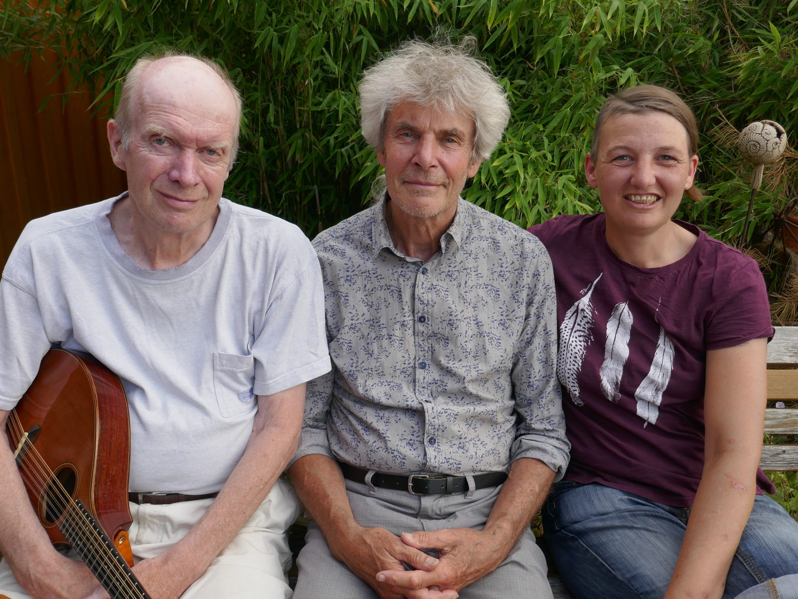

Die Zukunft
Einmal live in Tokio
Der größte Wunsch der Amtsbrüder: „Einmal live in Tokio auf der Bühne zu stehen.“
Bis dahin spielen wir überall dort, wo man uns haben will: auf Kleinkunstbühnen, in Kultur-Cafés und -kneipen, in Kirchen und auf Veranstaltungen, auf Festen, Feiern und Jubiläen, auch privat. Die japanische Presse hat sich vorsorglich schon geäußert.

Trost und Erfolg
Tokio war noch nicht dabei
Dafür diese Orte, in letzter Zeit:
- KüsterhausVarrel
- FrühstücksmatineeWagenfelder Auburg
- ZukunftswerkstattMünster
- DGB-ZentralkundgebungLandkreis Diepholz
- StiftskircheBassum
- StadtbüchereiBarnstorf
- Kulturbühne HibberlersRechtern
- Café ArteHavixbeck
- Kleiner BühnenbodenMünster
- St.-Petri-DomBremen
- Willhadi-KircheEystrup
- RathausBarnstorf
- StrohmuseumTwistringen
- Kunsthof BockhornSulingen
- KulturgutSchmalförden
- Omas gegen RechtsSulingen
- Kundgebung der LinkenSyke
- MittelaltertageAhlen
- BegegnungszentrumMünster-Kinderhaus
- SPD-Jahresempfang im KaschAchim
- KulturvereinUchte
- Storchenmuseum, Feuer und FlammeWindheim
- ver.di-JubiläumNienburg
- VdK-SommerfestBarenburg
- WeserbeatzNienburg
- Kulturbühne Villa StahmerGeorgsmarienhütte
- St.-Trinitatis-KircheMünster
- Friedenskreis an der Anne-Frank-GesamtschuleHavixbeck
In der Elbphilharmonie wollten wir nicht spielen. Das Angebot haben wir abgelehnt, der Rahmen ist viel zu unpersönlich.